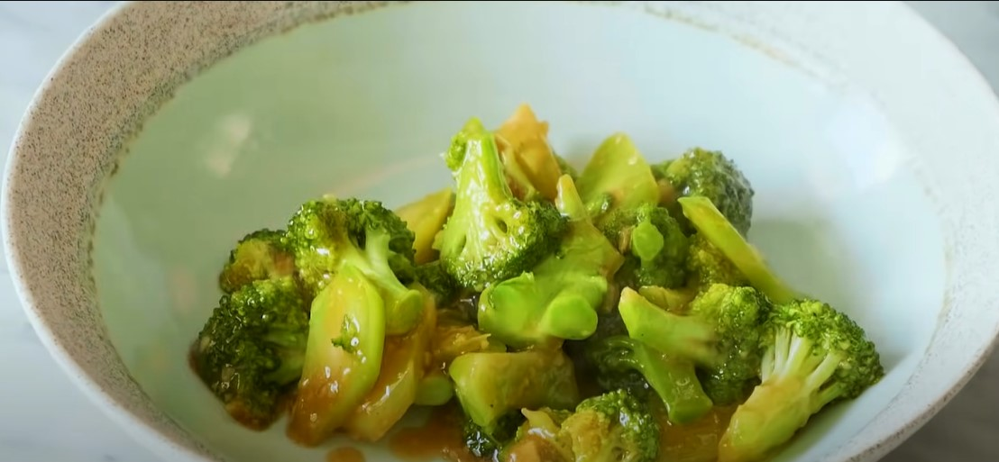

Resep Tumis Brokoli
Resep Tumis Brokoli

Bahan-Bahan:
- 1 ikat brokoli, ukuran sedang
- 1 1/2 sdm Saus tiram / oyster sauce
- 1 sdm garlic yg sudah di haluskan
- 1/2 sdt chicken powder / kaldu ayam instant
- merica bubuk
- garam
Cara Membuat:
- Potong brokoli.
- Cuci brokoli menggunakan air bersih dan sedikit garam. Lalu tiriskan.
- panaskan wajan dan masukan minyak goreng secukupnya atau sekitar 3 sdm.
- tumis bawang putih sampai kecoklatan.
- Masukkan brokoli dan aduk rata.
- Masukan 1 1/2 sdm Saus tiram, air sekitar 50ml.
- Tambahkan lada putih secukupnya, lalu tambahkan 1/2 sdt chicken powder, aduk rata.
- Masak kurang lebih 2 menit.
- Lalu tambahkan 2 sdt tepung maizena yang sudah dilarutkan dengan 2 sdm air.
- Aduk rata.
- Brokoli siap disajikan.
Link video: